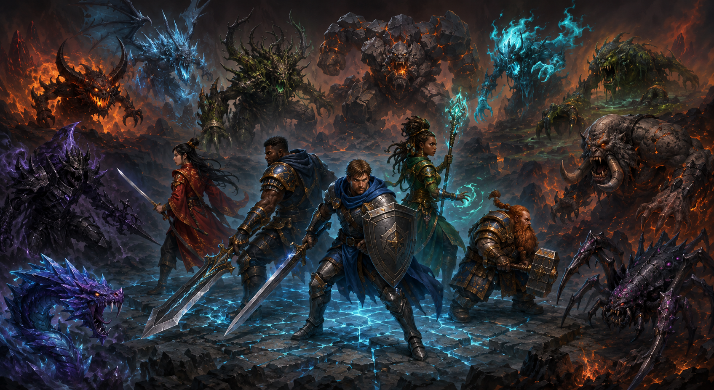
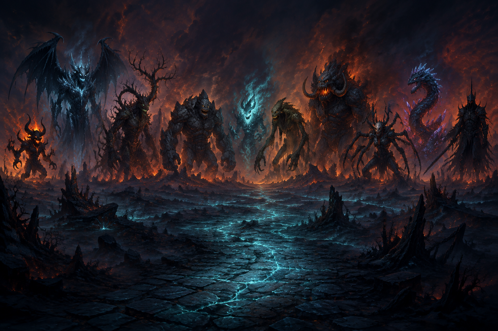

Place your colour
Take a turn on the 9 × 9 board. Red and yellow move through the same maze, but only one line can claim the link.
Build a line. Break the curse. Lead your hero through a world where every board is a crossroads and every monster remembers.
Meet the whole party
Five guardians. Five silhouettes. Every face has a place on the road—and every one stands ready when the Finks close in.

Welcome, link-maker
Fink is a two-player strategy game wrapped in a living fantasy journey. Outthink a friend, outlast the computer, and keep your hero moving toward the next monster on the map.
Twenty-four encounters. A trail of fire, fog, and impossible links. Every victory marks the road; every defeat leaves the monster waiting.
See the rulesLearn the rhythm
Take a turn on the 9 × 9 board. Red and yellow move through the same maze, but only one line can claim the link.
Watch the open neighbours and the hidden routes. A clever block can be worth more than a dramatic attack.
Connect the target number in a row. Win cleanly, earn your keys, and carry the story to the next mission.
Meet the opposition
The Journey is crowded with sharp teeth, swinging limbs, and creatures that wait for the one move you overlook. Slay a mission and the road remembers your name.
View the champions
TEN WATCHERS · JOURNEY ATLASThe wall of fame
Every hero gets a place on the wall. Victories decide the order; the road decides what comes next.
Sample wall — live rankings will appear here when the public scoreboard is connected.
Help shape the road
Every good bug report makes Fink stronger. Tell us what happened, where it happened, and what your hero was trying to do.
Report a bugThe support inbox is being connected to the Fink Link website. Please include your release stamp and device when emailing.
The next battle is waiting
Choose a hero. Find the link. Leave the road changed.
Play Fink